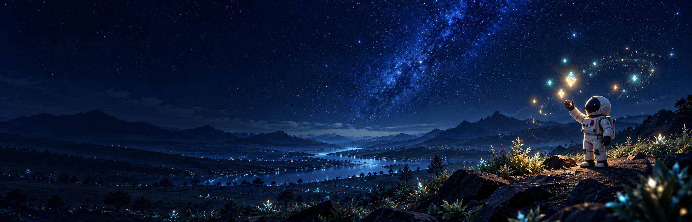

01 OBSERVE
观察精灵光场
留意微光的聚散与光波的传播，
从现象中发现可利用的规律。

宣传美术 · AI 生成
循光而行A WORLD WOVEN IN LIGHT
一次迫降，将你留在陌生的星球。
从身边一缕微光开始，让发现成为可以使用的知识。
01 OBSERVE
留意微光的聚散与光波的传播，
从现象中发现可利用的规律。
02 CREATE
采集材料，组合器具，编写程序。
让旧工具参与新的创造。
03 EXPLORE
将植物纤维织成轻透翼面，
借波穿行于夜色与光海之间。
发现规律，尝试自己的方法。参考造物是一种起点，创造不只有一种答案。
FROM THE GAME
29 秒实机片段 · r68
局部飞行展示
A CLOSER LOOK
r70 实机截图
点击查看 1920 × 1080 原图
YOUR FIRST STEPS
走近物件，按 E 互动。
需要方向时，按 M 查看探索指引。
以下为键鼠操作。具体情境以游戏内提示为准。
移动
调整视角
与附近物件互动
切换附近物件
探索指引
查看器具
FOLLOW THE LIGHT
《织光之野》正在开发中。
前往 TapTap，了解作品与试玩进展。
当前试玩包审核中，游戏页面暂未公开。审核后由 TapTap 开放。